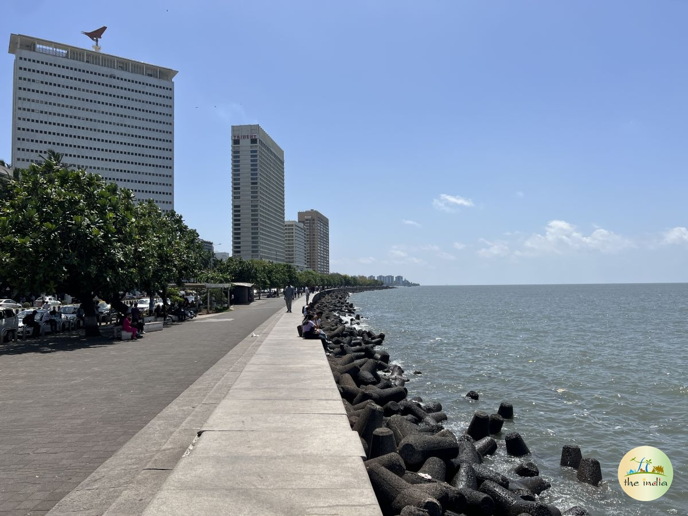
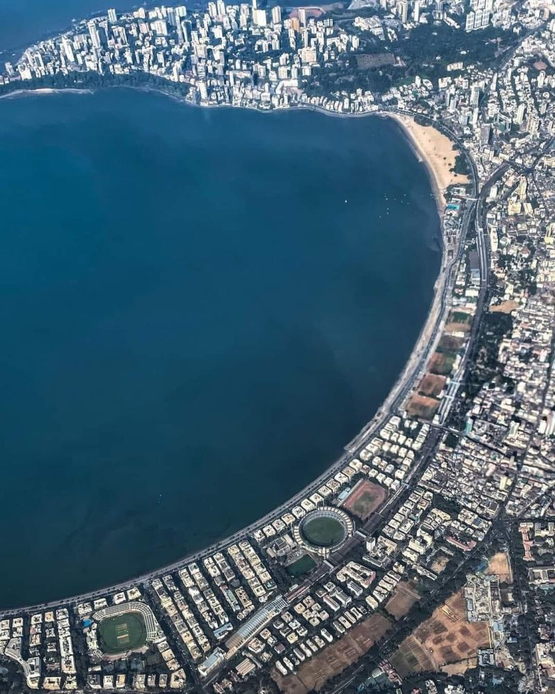
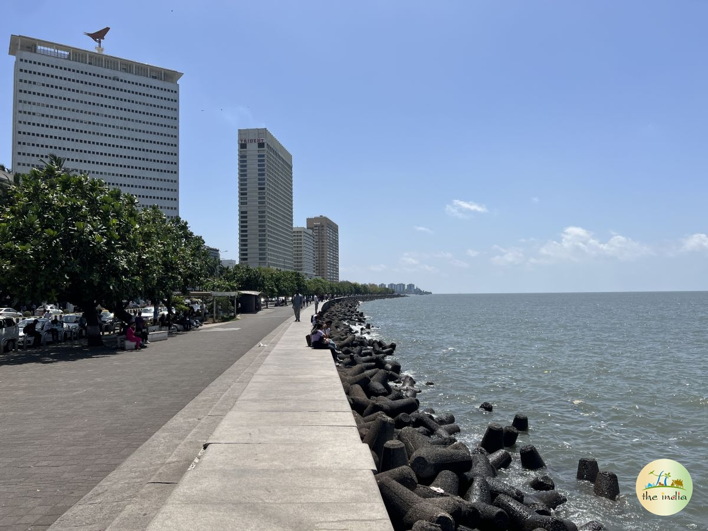
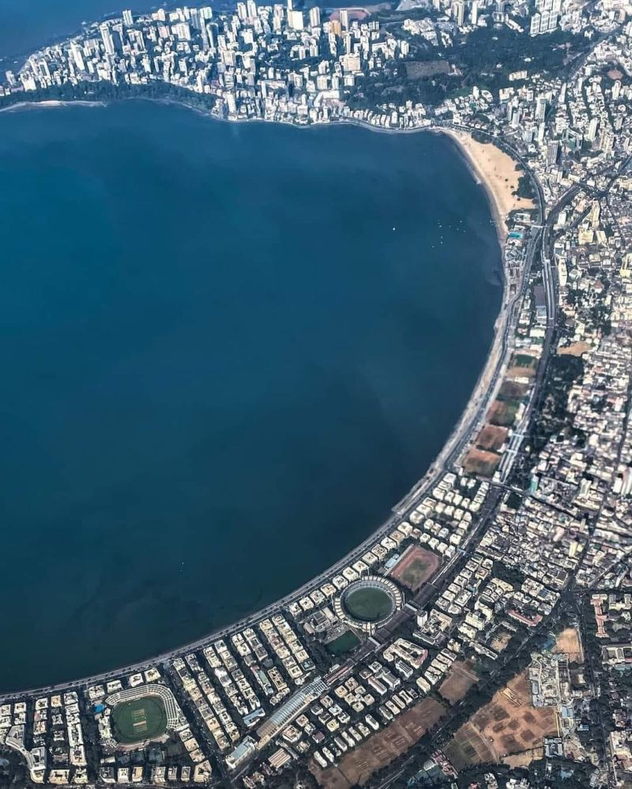

Marine Drive, Mumbai
The Queen’s Necklace of India
The Queen’s Necklace of India
Marine Drive is a 3.6 km long boulevard in South Mumbai along the Arabian Sea. Popularly called the "Queen’s Necklace", its glittering street lights resemble a necklace when viewed at night. It’s one of the most iconic landmarks of Mumbai where locals and tourists gather to enjoy sunsets, sea breeze, and the lively vibes of the city.
Marine Drive is easily accessible through Mumbai’s local trains:
 


